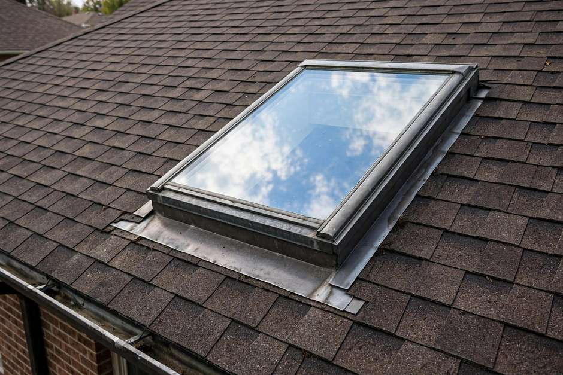
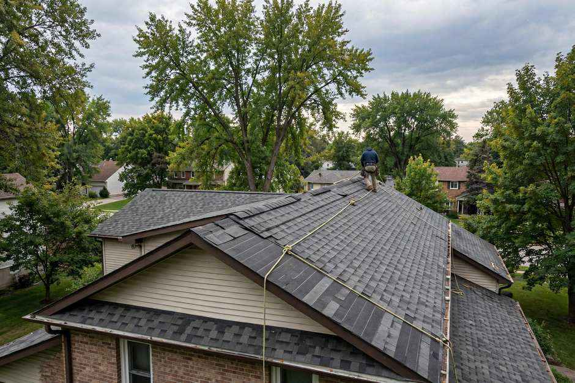
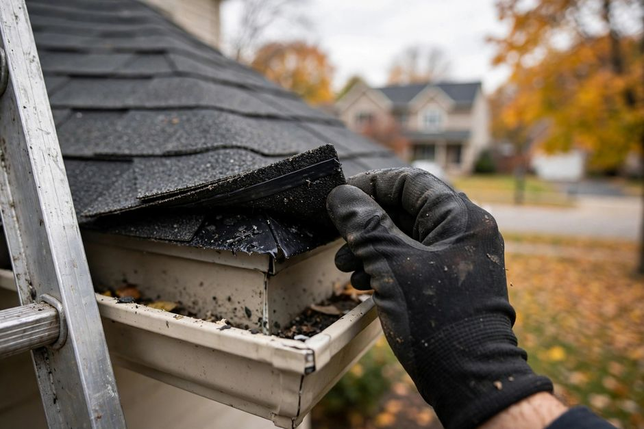
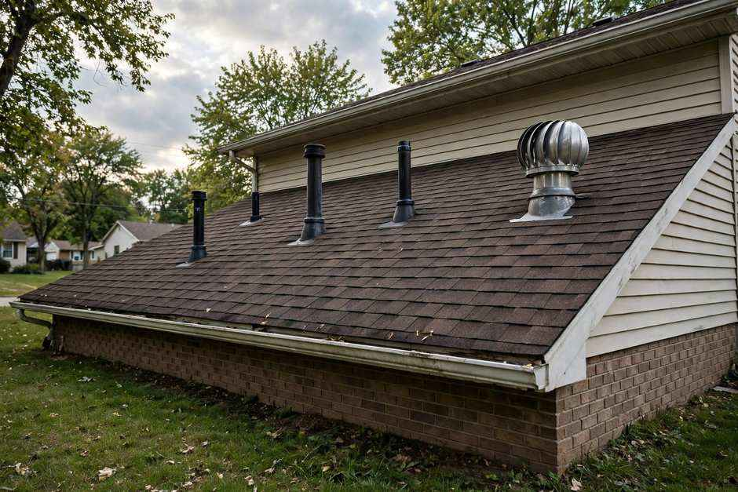
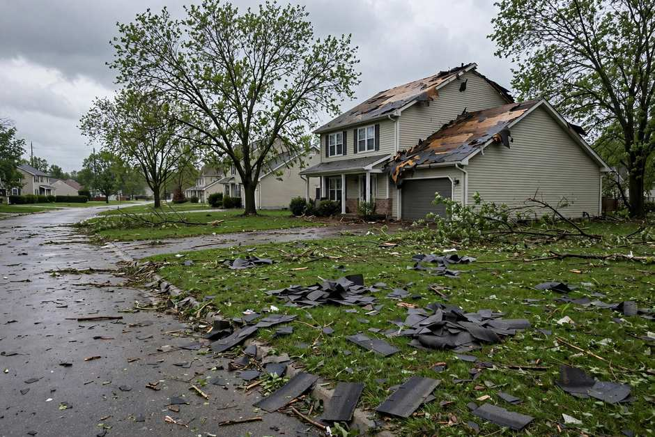

Ponding water after rain
Water that stands on the membrane points to drainage, slope or a blocked outlet. It stresses seams and flashing over time, and it can hide the entry point of a leak. Ask how drainage would be assessed alongside the membrane.
Flat roof repair Des Plaines IL homeowners ask about usually starts with a stain on a ceiling below a low-slope section — over an addition, a porch, a dormer or a garage. This page explains how flat and low-slope systems work, why seams and tie-ins leak, and how repair and roof replacement compare, so you can ask useful questions when you call (224) 802-4866. Scope for any particular system is confirmed when you call.
Call (224) 802-4866 during business hours and describe what you are seeing. Hours: Mon–Tue 7:30 AM–7:00 PM, Wed–Fri 7:30 AM–7:30 PM, Sat 8:30 AM–5:00 PM, Sun closed.
Call Now (224) 802-4866 → No online booking. No email. Phone calls only.
A flat roof is rarely level. Low-slope sections shed water slowly, so small defects matter more than they do on a steep pitch: a seam that has opened, flashing that has lifted at a wall, or a drain that no longer clears can hold water against the membrane long enough for it to find a way in. The leak inside rarely sits directly below the opening in the roof, because water can travel along a deck before it shows. That is why the first questions are about where the water appears, when it appears, and what the roof is made of — not about a single patch.
Des Plaines weather works against low-slope roofs in a particular way. O'Hare normals for 1991–2020 record 38.4 inches of snowfall a year and about 121 nights a year with lows at or below freezing, which means repeated freeze–thaw cycles that stress seams and flashing. Standing water that freezes and thaws can open a seam a little further each cycle. Homes of many ages sit side by side in Downtown Des Plaines and Cumberland, and a low-slope addition on a mid-century house often meets a pitched roof at a tie-in that needs careful detailing. If you are weighing repair against a larger job, the roof repair page explains the wider decision, and the emergency roof repair page covers active leaks.
There is no single flat roof repair. What makes sense depends on the membrane, the age and condition of what is underneath it, and whether water has been getting in for a short time or a long one. These are the topics worth covering before any work is agreed.
Leaks on low-slope roofs often start at seams, terminations, drains or flashing rather than in the middle of the membrane. Ask how the source would be identified, what would be looked at, and whether photographs and written findings are part of the visit.
A membrane can look sound while the material beneath it is wet. Ask what happens if wet material is found, how the deck is checked, and how that finding would change the scope before work starts.
Seams join membrane sheets, and flashing seals the edges where the roof meets walls, curbs and penetrations. Ask how each would be handled for the system on your roof, and confirm the scope for that system when you call.
Water that stands on a low-slope roof after rain points to a drainage question, not just a membrane question. Ask whether drains and scuppers are part of the conversation, and what standing water would mean for a repair.
A localised failure and a widespread failure are different problems. Ask what would make a targeted repair sensible and what would point toward flat roof replacement instead, and get the reasoning in writing with the estimate.
Call (224) 802-4866 and describe what you are seeing: where water appears inside, when it started, and anything you know about the roof — its age, its material, and whether it covers an addition, porch, dormer or garage. Ask what help is available for that system and what the next step would be.
The roof, seams, flashing, drains and tie-ins are looked at, along with the ceiling or wall below. Ask what the visit covers, whether photographs are taken, and how findings are shared with you.
Ask for findings and an estimate in writing, showing the scope, the materials described in general terms, and anything that would change the scope if hidden damage is found. Do not agree work on a verbal figure alone.
If repair and replacement are both realistic, ask for the reasoning for each in writing. Confirm what is included, what is not, and what happens if the deck or material underneath turns out to be wet.
Ask how the finished work is checked, what you are shown when it is done, and what records you keep. Keep the written findings, the estimate and any photographs together for future reference.
Two membrane systems come up most often on Des Plaines low-slope roofs. This is general education, not a list of what is offered — confirm scope for a particular system when you call.
TPO is a single-ply membrane whose seams are heat-welded. Guides describe it as the most commonly installed new flat membrane in Chicago in 2026. Heat-welded seams, flashing details and penetrations are the points to ask about.
EPDM is a rubber membrane with the longest track record of the single-ply systems. General guidance notes seam and adhesive vulnerability under temperature swings, which matters in a freeze–thaw climate.
Modified bitumen is a layered asphalt-based system sometimes found on older low-slope sections. It is mentioned here only as general background; confirm whether it is relevant to your roof when you call.
PVC is another single-ply membrane, more often discussed for larger flat roofs than for houses. It is mentioned here only as general background, with no offer claim.
The City of Des Plaines Roof Guide describes tab shingles as not for use below a 2:12 pitch, and roll roofing as not for use below 1:12. That is why membranes, rather than shingles, are used on low slopes. Confirm current requirements with the Building Division.
Where a low-slope section meets a pitched roof — over an addition, porch or dormer — the transition detailing is a common leak point, identified by a Des Plaines-area contractor source. Ask how any tie-in on your roof would be handled.
Ponding is water standing on the roof after rain. In a climate with repeated freezing nights, standing water stresses seams and flashing as it freezes and thaws. Drainage is part of the repair conversation, not an afterthought.
A ceiling stain appears below an addition after rain, while the pitched roof above looks unchanged. Water often enters at a seam or tie-in and travels before it shows inside.
Ask how the entry point would be traced, whether the tie-in between the addition and the main roof would be checked, and what written findings you would receive.
Water stands on the low-slope section well after rain has stopped, and the same area shows staining or soft spots over time.
Ask whether drainage is part of the assessment, what standing water means for the membrane, and whether repair alone would address the cause.
Seams have opened in more than one place, flashing has lifted, and earlier patches have not held. The question is no longer one leak but the condition of the system as a whole.
Ask what would make replacement the sensible option, how the decision would be explained in writing, and what the replacement page describes about the wider job. See roof replacement for the broader picture.
Most flat roof calls come down to a handful of failures. Each one below is described in general terms; whether it applies to your roof is a question for a look at the roof itself.
Ask a pro →Water that stands on the membrane points to drainage, slope or a blocked outlet. It stresses seams and flashing over time, and it can hide the entry point of a leak. Ask how drainage would be assessed alongside the membrane.
Seams join membrane sheets, and freeze–thaw cycles stress them. An open seam can admit water that travels before showing inside. Ask how seams would be checked across the roof, not only where the stain appears.
Flashing seals the roof edge where it meets walls, curbs and penetrations. When it lifts or splits, water has a direct route in. Ask how flashing details would be checked and described in the findings.
Debris and foot traffic can puncture a membrane, and summer storms can lift edges and flashing. Photograph damage promptly, and see the storm damage roof repair page for the wider storm process and the emergency roof repair page for active leaks.
“I use WP Exteriors to repaint my roof and do as some tuckpointing on the exterior of my building. Pat and his team were very professional and communicative. They did a good job explaining what needs to be done to my home immediately and what I can plan for in the future. I will definitely be using them in the future.”
Patricia Murray2 months ago · Google review
✓ Google review“Patryk was great to work with and extremely professional. I highly recommend WP exteriors and plan on using them again in the future!”
Brian Avila Gaona5 months ago · Roof inspection · Google review
✓ Google review“I recently had the pleasure of working with WP Exterior for my roofing needs, and I must say, I couldn't be more satisfied with the outcome. From the moment I contacted them, it was evident that they truly value their customers. …”
Filip Libera2 years ago · Google review · Verbatim excerpt
✓ Google reviewIt depends on the membrane, the cause of the leak, and the condition of what is underneath it. A localised seam or flashing failure is a different problem from widespread deterioration. A look at the roof, with written findings, is how the two are told apart. Call (224) 802-4866 to describe what you are seeing and confirm what help is available for the system on your roof.
Ask for the reasoning in writing. A targeted repair usually makes sense when the failure is localised and the rest of the system is sound. Replacement enters the conversation when failures are widespread, when material underneath is wet over a large area, or when earlier repairs have not held. The roof replacement page explains the wider decision.
Low-slope roofs shed water slowly, so drainage matters more than on a steep pitch. Standing water can point to a blocked drain or scupper, a low spot, or a slope question. Because standing water stresses seams and flashing as it freezes and thaws, drainage is part of the repair conversation rather than a separate issue.
TPO and EPDM are the single-ply membranes discussed most often in general guidance, and modified bitumen appears on some older low-slope sections. Which system is on a particular roof, and what scope is available for it, is confirmed when you call. This page describes systems in general terms and does not promise any particular system as offered.
 Metal RoofingStanding seam and exposed-fastener systems, climate fit, and attributed guide lifespans and costs.Explore →
Metal RoofingStanding seam and exposed-fastener systems, climate fit, and attributed guide lifespans and costs.Explore →
Roof ReplacementFull tear-off and replacement, the code and climate angles for Des Plaines, and how repair and replacement compare.Explore → Roof RepairLeak repair, flashing and the repair-or-replace decision, explained for Des Plaines roofs.Explore →
Roof RepairLeak repair, flashing and the repair-or-replace decision, explained for Des Plaines roofs.Explore →
Roof InspectionWhat an inspection covers, when one matters locally, and how findings are shared in writing.Explore →
Attic VentilationAttic ventilation as part of the roof system: intake, exhaust and the ice-dam mechanism.Explore →
Emergency Roof RepairActive leaks and storm breaches: what stabilisation means, safety while waiting, and honest scope limits.Explore → Storm Damage Roof RepairHail and wind damage in one place: mechanisms, documentation, and the lawful contractor role.Explore →
Storm Damage Roof RepairHail and wind damage in one place: mechanisms, documentation, and the lawful contractor role.Explore → Skylight InstallationSkylight replacement, reflashing and leak sources, with fixed and venting units explained.Explore →
Skylight InstallationSkylight replacement, reflashing and leak sources, with fixed and venting units explained.Explore →Call (224) 802-4866 during business hours to describe your flat or low-slope roof and ask what help is available. Hours: Mon–Tue 7:30 AM–7:00 PM, Wed–Fri 7:30 AM–7:30 PM, Sat 8:30 AM–5:00 PM, Sun closed.
Call (224) 802-4866 →Call (224) 802-4866 to talk about your roof. Describe what you are seeing — a leak, a stain, damage after a storm — and ask what help is available and what the next step would be. There is no online booking and no email contact. Hours: Mon–Tue 7:30 AM–7:00 PM, Wed–Fri 7:30 AM–7:30 PM, Sat 8:30 AM–5:00 PM, Sun closed. The office is at 638 Birchwood Ave, Des Plaines, IL 60018.